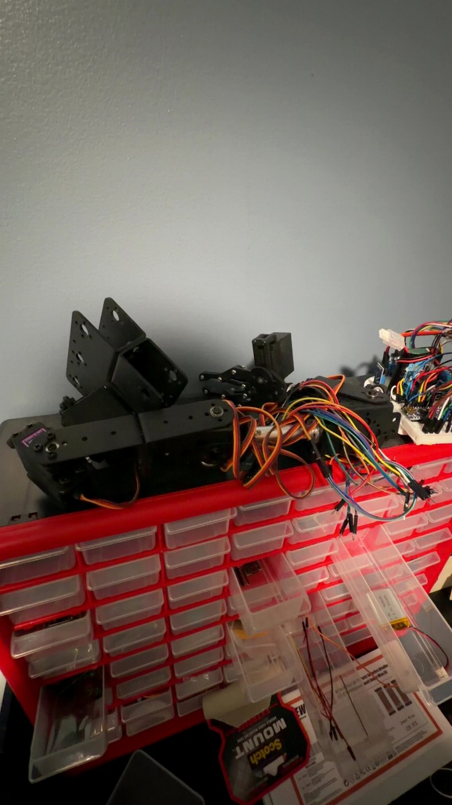

Arm assembly
Assembled and integrated the multi-axis structure, joints and gripper hardware.
ROBOTICS · FUNCTIONAL PROTOTYPE
A fully moving six-axis robotic arm prototype that exposed the real challenges of stiffness, grip, cable routing and software limits.

PROJECT OVERVIEW
All six axes operated through an Arduino Mega and joystick inputs. The system demonstrated complete motion, while grip, shaking and wire management prevented consistent object handling.
SYSTEM ARCHITECTURE
Analog commands for multiple joints.
AI-assisted code structure, mapping and joint commands.
Base, links, wrist and gripper movement.
DESIGN PROCESS
Assembled and integrated the multi-axis structure, joints and gripper hardware.
Connected the servos, controls and power system for complete manual operation.
Used AI to establish code, then tested behavior on the real mechanism and identified unsafe failure modes.
PROBLEMS & ITERATIONS
The arm shook during movement, reducing positioning accuracy and grip consistency. A stiffer structure and smoother acceleration would be required.
The gripper could interact with objects, but not reliably enough for repeatable pick-and-place work.
A software fault sometimes caused continued rotation, tangling the wires. Joint limits, fault handling and startup validation were necessary lessons.
Wires crossed moving joints without a controlled routing path, creating both range and reliability problems.
TESTING PROTOTYPE

FINAL RESULTS
The arm successfully demonstrated coordinated multi-axis control. Its main value was identifying the need for mechanical stiffness, acceleration control, hard and software joint limits, planned cable routing and a redesigned gripper.